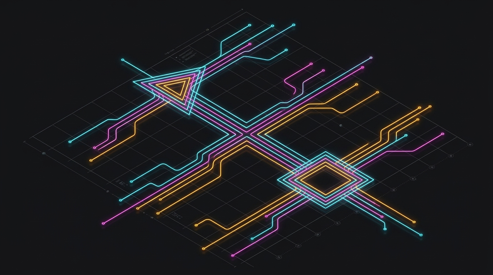
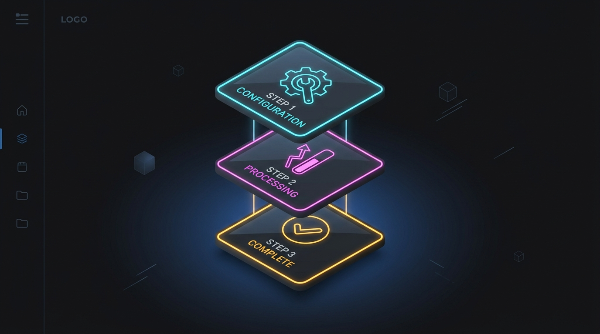
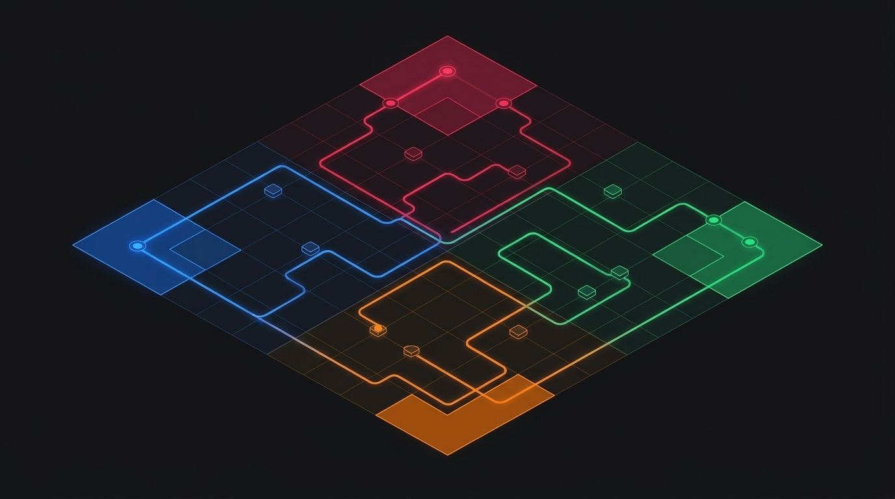
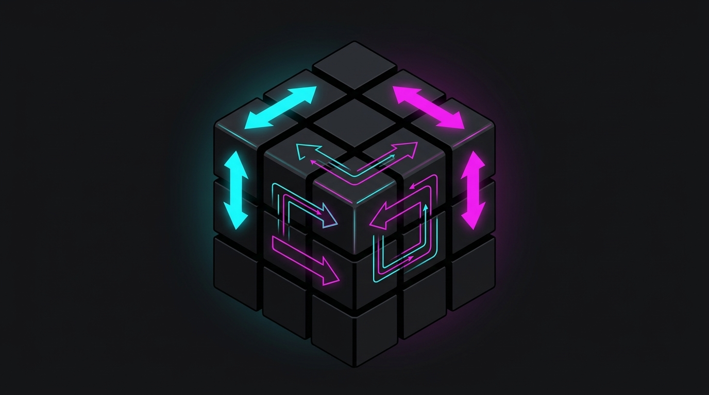
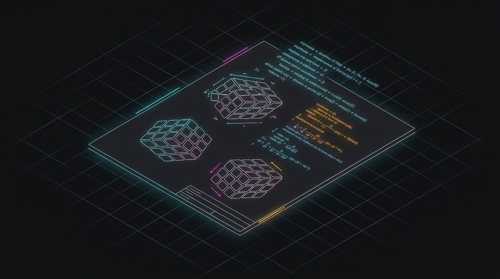
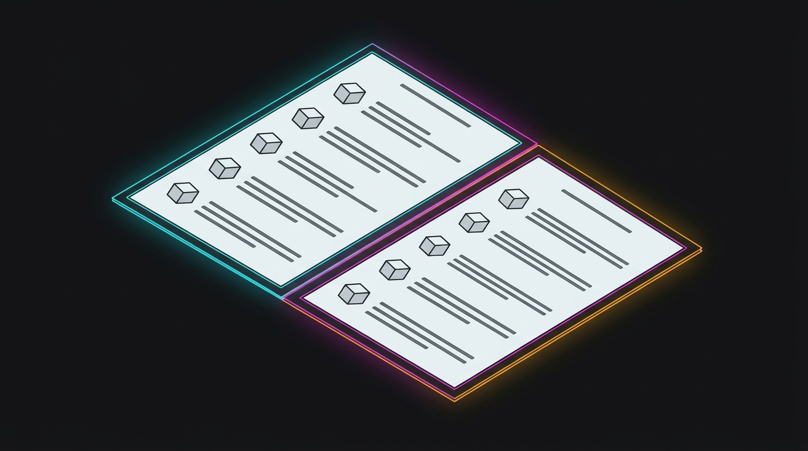
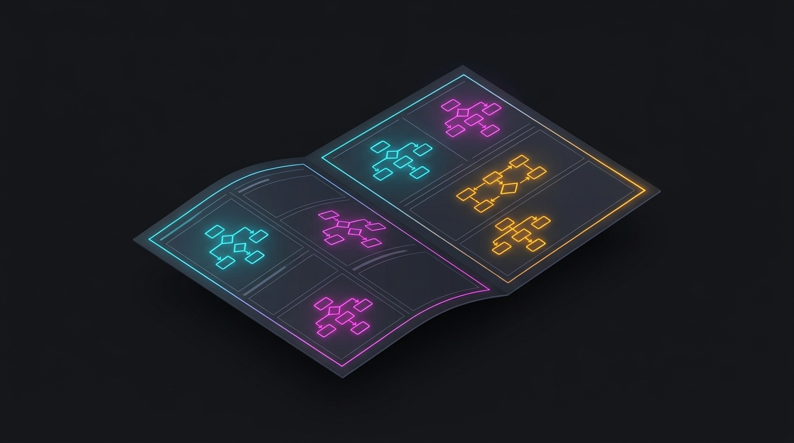
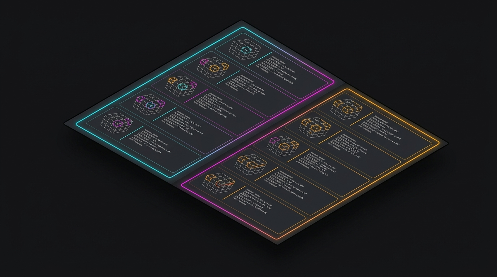

Full guide — jump flows
One trigger, then "go to case X". Shorter to read, follows the route.
Open the full guideTwo routes through all 57 OLL cases, built on four triggers only: Sune (S), Anti-Sune (AS), Edge Trigger (ET) and Wide Edge Trigger (WT). Every case solves in at most three triggers, with AUF turns spelled out. Each row also carries the reference PDF's own one-step formula. Clicking any diagram opens that exact position in a cube simulator with the solution preloaded.
Those same routes also come as a route map: one lane per case, drawn as the shapes you pass through, grouped either by the shape a lane lands on or by the formula it starts with.
PLL is covered by a third guide: all 21 permutation cases with their formulas, plus the four-formula minimal set (A1, U1, H, T). Every guide has a print version: two cases per line, the minimal formulas side by side at the top, no index.
Every case, flat: two ways to read the same four-trigger routes.

One trigger, then "go to case X". Shorter to read, follows the route.
Open the full guide
One flat list per case: every step in order, no jumps.
Open the minimal guideThe same routes as a picture, cut two ways: by the shape a lane ends on, and by the formula it starts with.
Lanes grouped by the shape they reach before the last trigger: turn it into that shape, then one trigger finishes it.
Open the route map
The same lanes grouped by the formula they open with — the colour each case carries in the step list.
Open the route mapWhere the cases, the numbers and the formulas come from.

All 21 permutation cases with their formulas, and the minimal four: A1, U1, H, T.
Open the PLL guide
Zemdegs / Klise algorithms — case names, OLL numbers and diagrams.
Open the reference PDFPaper versions: two cases per line, the minimal formulas side by side at the top, no index.

The jump-flow guide as a two-up sheet.
Open the print version
The flat step list as a two-up sheet.
Open the print version
The 21 permutation cases and the minimal four, two-up.
Open the print versionThe OLL guides group the cases exactly as the reference PDF does, so a case can be found by its PDF name (T1, P3, B6, OCLL6) or by its OLL number. The PLL guide follows the order of the reference page. The route maps carry no print version yet.